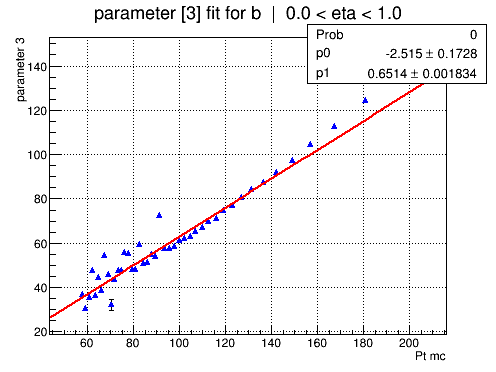
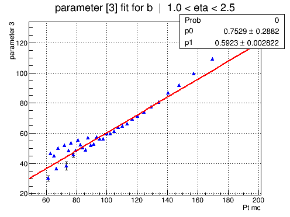
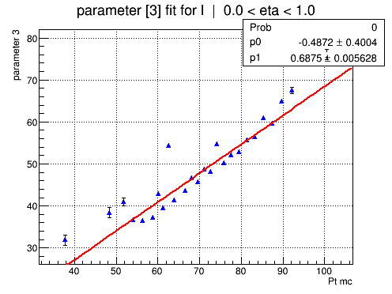
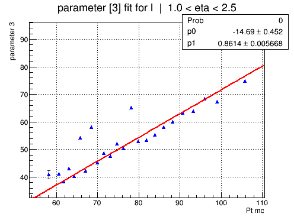

Parameter 3 overview
SBF: [0]*(0.9*exp(-0.5*((x-([1]))/([2]))**2)+(1-0.9)*exp(-0.5*((x-([3]))/([2]+[4]))**2))
ABF: [0]+[1]*x
Run: V11_full_TTbar_0.3delR
Sample: /scratch/tklijnsm/V11_full_jets_0.3delR.root



